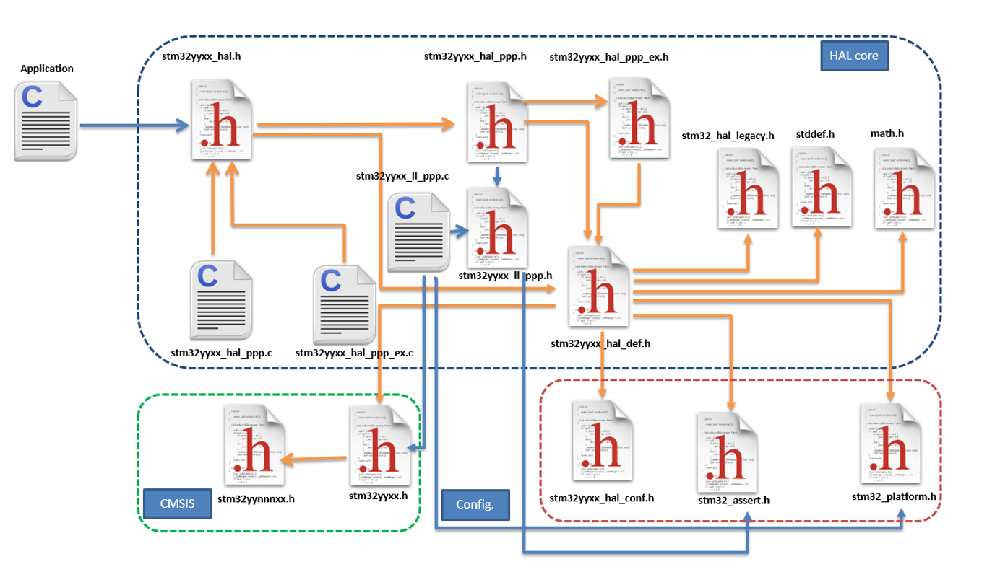
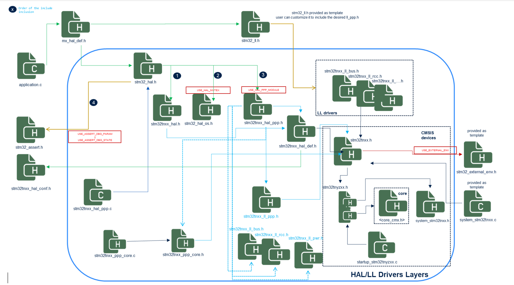

HAL refactoring ¶
Add a central include HAL file: stm32_hal.h. ¶
|
Feature |
HAL1 |
HAL2 |
|---|---|---|
|
Entry Point Header File |
|
|
|
Inclusion |
The
|
The
|
|
Module Enabling Defines |
The
|
The
|
Rationale ¶
-
Series Agnosticism : Removing the name of the series from the entry point header file to the HAL library allows making the HAL agnostic versus the series. Users do not need to edit their application source code to change the name of the series in the HAL entry point inclusion when moving from one series to another. The user will only need to change the path in the IDE project to move from one series to another.
-
Configuration Simplification : The HAL configuration file
stm32tnxx_hal_conf.hnow contains only the defines allowing the configuration of the HAL, including theUSE_HAL_PPP_MODULEdefines to activate the given HAL PPP module. The inclusion of the HAL PPP modulesstm32tnxx_hal_ppp.his now done inside thestm32_hal.hunder theUSE_HAL_PPP_MODULEconditional defines and no longer in thestm32tnxx_hal_conf.h.
Add a central include HAL file: stm32_ll.h. ¶
In HAL2, a new header file is provided
stm32_ll.h
to serve as a single inclusion entry point to all the LL drivers header files of a given series.
The file name is series agnostic and it is provided as a template (to be copied by the user to his application in case of standalone usage or generated by STM32CubeMX2 when using code generation).
In the case of standalone usage, the given
stm32_ll.h
template includes all the LL driver header files of the given series.
Users can utilize the copied file as is, where all LL drivers of the given STM32 family are included, or customize it to keep only the required LL driver’s inclusion.
In the case of code generation using STM32CubeMX2, this file will contain only the selected LL driver components.
Example:
/*** @file stm32_ll.h
...
/* Define to prevent recursive inclusion -------------------------------------*/
#ifndef STM32_LL_H
#define STM32_LL_H
#ifdef __cplusplus
extern "C" {
#endif
/* Includes ------------------------------------------------------------------*/
#include "stm32u5xx_ll_adc.h"
#include "stm32u5xx_ll_bus.h"
#include "stm32u5xx_ll_comp.h"
#include "stm32u5xx_ll_cordic.h"
#include "stm32u5xx_ll_crc.h"
#include "stm32u5xx_ll_crs.h"
#include "stm32u5xx_ll_dac.h"
#include "stm32u5xx_ll_dcache.h"
#include "stm32u5xx_ll_dma.h"
#include "stm32u5xx_ll_dma2d.h"
#include "stm32u5xx_ll_exti.h"
#include "stm32u5xx_ll_fmac.h"
#include "stm32u5xx_ll_gpio.h"
#include "stm32u5xx_ll_gtzc.h"
#include "stm32u5xx_ll_i2c.h"
#include "stm32u5xx_ll_icache.h"
#include "stm32u5xx_ll_iwdg.h"
#endif /* STM32_LL_H */
Add platform file: stm32_external_env.h. ¶
When using the HAL or/and LL drivers, several defines must be provided for adapting internal and external oscillator values,as well as system configurations. These include:
-
Internal Oscillator Values : Adaptations like HSI, MSI, etc.
-
External Oscillator Values : Adaptations like HSE, LSE, etc.
-
System Configuration : Values like VDD_VALUE.
In HAL1, these various defines are provided/customizable in the
stm32tnxx_hal_conf.h
file.
In HAL2, a new
stm32_external_env.h
file is provided as a template and contains the specific parameters related to
the platform, such as external oscillators. This file is included in
stm32tnxx.h
under the switch
USE_EXTERNAL_ENV
.
The
USE_EXTERNAL_ENV
define, when needed, shall be set in the project pre-processor.
To streamline the configuration, all internal oscillator values are now placed in the CMSIS device file such as
stm32u575xx.h
. In HAL2, the
stm32tnxx_hal_conf.h
contains only the configuration defines used by HAL.
Note
As we moved internal oscillator values inside the CMSIS device file and external ones to
stm32_external_env.h
,
these defines are removed from HAL and LL files such as
stm32tnxx_ll_rcc.h
. The HAL and LL RCC still use these oscillator values, but they are defined in the CMSIS device files or in
stm32_external_env.h
. This reorganization ensures a cleaner separation of STM32 device-specific parameters, platform (boards) specific parameters, and HAL-specific configuration, improving maintainability and clarity.
Important
The
stm32_external_env.h
is not part of the HAL pack; it is rather provided as a template in the DFP pack.
It shall then be copied once to the user example or application and updated as per the platform specifications.
Refactor the HAL inclusion model. ¶
The HAL1 and HAL2 inclusion models for STM32 microcontrollers differ primarily in their structure and inclusion mechanisms.
HAL1 uses
stm32tnxx_hal.h
as the entry point, enabling PPP modules through the configuration
file
stm32tnxx_hal_conf.h
under their respective
HAL_PPP_MODULE_ENABLED
defines set in
the same
stm32tnxx_hal_conf.h
file.
In contrast, HAL2 uses
stm32_hal.h
as the entry point, with a more structured inclusion order and additional
conditional flags (
USE_HAL_MUTEX
,
USE_ASSERT_DBG_PARAM
,
USE_ASSERT_DBG_STATE
,
USE_HAL_PPP_MODULE
)
to include specific files like
stm32_hal_os.h
,
stm32_assert.h
, and the various
stm32tnxx_hal_ppp.h
modules.
The activation of the conditional defines
USE_HAL_MUTEX
and
USE_HAL_PPP_MODULE
is done through
the configuration file
stm32tnxx_hal_conf.h
. The activation of the defines
USE_ASSERT_DBG_PARAM
and
USE_ASSERT_DBG_STATE
shall be done, if needed, in the IDE pre-processor settings.
In HAL2, user configuration is propagated through
stm32tnxx_hal_def.h
that includes
stm32tnxx_hal_conf.h
.
In HAL2, the
stm32tnxx_ll_ppp.c
files have been removed, and users shall resort to an equivalent sequence
of LL static inline functions provided within
stm32tnxx_ll_ppp.h
to perform the equivalent
of
LL_PPP_Init
and
LL_PPP_DeInit
.
STM32CubeMX2 can be utilized to generate these LL PPP initialization and deinitialization sequences.
In HAL2, the
stm32tnxx_hal_ppp_ex.h
modules have been removed, and the equivalent of their content APIs merged inside
the corresponding
stm32tnxx_hal_ppp.h
.
Both HAL1 and HAL2 provide
stm32_assert.h
as a customizable template.
HAL2 provides additional template files such as
stm32_ll.h
and utilizes an additional
stm32_external_env.h
template file that is provided by the DFP.
HAL1 Inclusion Model ¶


HAL2 Inclusion Model ¶


Remove the global Msp file. ¶
In HAL1, the functions
HAL_MspInit
and
HAL_MspDeInit
are respectively called from
HAL_Init
and
HAL_DeInit
.
These functions are provided as weak callbacks to be implemented by the user to perform system-level
initializations (Clock, GPIOs, interrupts).
Additionally, each HAL PPP driver provides dedicated
HAL_PPP_MspInit
and
HAL_PPP_MspDeInit
callbacks
that are respectively called from
HAL_PPP_Init
and
HAL_PPP_DeInit
.
These functions are provided as weak callbacks to be implemented by the user to perform peripheral-level
initializations (Peripheral Clock, GPIOs, DMA, and interrupts).
The
stm32tnxx_hal_msp_template.c
file was provided as a template file to be copied to the user application
folder or generated by CubeMX.
It contains the implementation of the MSP initialization and de-initialization functions.
In HAL2, all the
MspInit
and
MspDeInit
functions are removed, including the global ones
and the PPP ones. The equivalent of the global MSP Init and DeInit are generated by STM32CubeMX2 respectively
after the generated call to
HAL_Init
and
HAL_DeInit
(without using any callback).
The equivalent of the peripheral MSP Init and DeInit are generated by STM32CubeMX2 respectively after
the generated call to
HAL_PPP_Init
and
HAL_PPP_DeInit
(without using a callback).
The file
stm32tnxx_hal_msp_template.c
is no longer used and has been removed.
Cleanup the HAL configuration file ¶
In HAL2, The HAL configuration file
stm32tnxx_hal_conf.h
contains only the defines
allowing the configuration of the HAL drivers.
|
Feature |
HAL1 |
HAL2 |
|---|---|---|
|
Enabling Defines for HAL PPP Modules |
Various enabling defines for selected HAL PPP modules, e.g.,
|
Various enabling defines for selected HAL PPP modules, e.g.,
|
|
Oscillators and HW Configuration Defines |
Defines related to oscillators and HW configuration, e.g.,
|
Internal oscillator and voltage values (e.g.,
|
|
Tick Interrupt Priority |
|
|
|
Assert Selection |
|
|
|
HAL PPP Features Enabling Defines |
e.g.,
|
e.g.,
|
|
HAL PPP Modules Inclusion |
Example: #ifdef HAL_ADC_MODULE_ENABLED
#include "stm32u5xx_hal_adc.h"
#endif /* HAL_ADC_MODULE_ENABLED */
|
|
|
Assert Macro |
Example: #ifdef USE_FULL_ASSERT
#define assert_param(expr) (..)
void assert_failed(uint8_t *file, uint32_t line);
#else
#define assert_param(expr) ((void)0U)
#endif /* USE_FULL_ASSERT */
|
The assert macros are available in the
#if defined(USE_ASSERT_DBG_PARAM)
#define ASSERT_DBG_PARAM(expr) (..)
void assert_dbg_param_failed(uint8_t *file, uint32_t line);
#else
#define ASSERT_DBG_PARAM(expr) ((void)0U)
#endif /* USE_ASSERT_DBG_PARAM */
#if defined(USE_ASSERT_DBG_STATE)
#define ASSERT_DBG_STATE(__STATE__,__VAL__) (..)
void assert_dbg_state_failed(uint8_t *file, uint32_t line);
#else
#define ASSERT_DBG_STATE(__STATE__,__VAL__) ((void)0U)
#endif /* USE_ASSERT_DBG_STATE */
|
|
Vital Parameter Run-Time Check |
None |
|
Merge HAL extension files with common ones and remove the EX prefix from APIs. ¶
In HAL2, the
stm32tnxx_hal_ppp_ex.h
modules have been removed, and the equivalent of their
content APIs merged inside the corresponding
stm32tnxx_hal_ppp.h
.
Example:
|
HAL Version |
File |
API |
|---|---|---|
|
HAL1 |
|
|
|
HAL2 |
|
|
Rename LL core drivers to stm32_ppp_core.h/.c to avoid confusion with user LL drivers. ¶
In HAL1,
core
drivers
are designed to provide a common implementation of peripherals that are used by several HAL drivers.
Example:
stm32tnxx_ll_usb.c
is the core driver abstracting the access of the USB OTG peripheral for HAL PCD and HAL HCD drivers.
Core drivers are not made to be used by the user application directly. The user application shall resort to the required HAL driver that is on top of the given LL core driver.
In HAL2, to avoid confusion between user LL drivers and the core drivers, these latter driver files are renamed to
stm32tnxx_ppp_core.c/h
(i.e., removing the term LL).
Example: The
stm32tnxx_ll_usart.h
is a user LL driver and is not impacted by this change.
The below table gives the list of core drivers (impacted by this file renaming) and the correspondence between HAL1 and HAL2:
|
Peripheral |
Used in HAL driver |
HAL1 core driver file naming |
HAL2 core driver file naming |
|---|---|---|---|
|
Delay Block |
QSPI/OSPI/SD/MMC |
|
|
|
FMC/FSMC |
SRAM/SDRAM/NOR/NAND |
|
|
|
SDMMC |
SD/MMC/SDIO |
|
|
|
USB OTG |
PCD/HCD |
|
|
Cleanup stm32tnxx_hal.c/h and move HAL module includes to stm32_hal.h ¶
As detailed in section
Migration example
, in HAL1 the
stm32_hal.h
is the unique entry point header file for any application
using the HAL drivers. the
stm32_hal.h
includes the
stm32tnxx_hal.h
first, then all
HAL PPP modules
stm32tnxx_hal_ppp.h
under their respective module enabling defines
USE_HAL_PPP_MODULE
.
In HAL2, the
stm32tnxx_hal.c/h
module is kept and cleaned as follows:
-
The
stm32tnxx_halmodule is limited to the following services:-
HAL Init and De-Init
-
Tick/Time base management
-
An API to retrieve the device unique ID
-
An API to retrieve the HAL version
hal_status_t HAL_Init(void); void HAL_Delay(uint32_t Delay); hal_status_t HAL_DeInit(void); hal_status_t HAL_InitTick(hal_tickFreq_t tick_freq, uint32_t tick_priority); uint32_t HAL_GetTick(void); uint32_t HAL_GetTickPrio(void); hal_tickFreq_t HAL_GetTickFreq(void); void HAL_SuspendTick(void); void HAL_ResumeTick(void); uint32_t HAL_GetVersion(void); hal_status_t HAL_GetDeviceUniqueID(hal_device_uid_t *uid);
-
-
The specific STM32 device services APIs such as DBGMCU, SYSCFG, VREFBUF, and EXTI are no longer provided within the
stm32tnxx_halmodule. Instead, they are offered by the following modules:-
The APIs related to the DBGMCU are provided by the HAL module:
stm32tnxx_hal_dbgmcu.h/.c -
The APIs related to the SBS are provided by the HAL module:
stm32tnxx_hal_sbs.h/.c -
The APIs related to the SYSCFG are provided by the HAL module:
stm32tnxx_hal_syscfg.h/.c -
The APIs related to the VREFBUF are provided by the HAL module:
stm32tnxx_hal_vrefbuf.h/.c(note that the VREFBUF APIs are now prefixed byHAL_VREFBUF_XXXwithout the SYSCFG mention) -
ART/PREFETCH APIs are available within the HAL flash module
-
EXTI APIs are provided by the
HAL_EXTIdriver.
-
Cleanup stm32tnxx_hal_def.h and redirect old defines to ARM recommended intrinsics like __WEAK and __PACKET. ¶
The stm32tnxx_hal_def.h file provides essential configurations and definitions to the STM32 HAL. In HAL2, this file is reworked as follows:
|
Aspect |
HAL1 |
HAL2 |
|---|---|---|
|
Configuration Header |
|
|
|
Device Family Pack (DFP) Header |
|
|
|
Legacy File Inclusion |
|
This file does not exist anymore.nIn HAL2, this strategy is dropped, and the
|
|
Standard Headers |
|
|
|
HAL Status Enumeration |
HAL1 enumeration: typedef enum {
HAL_OK = 0x00,
HAL_ERROR = 0x01,
HAL_BUSY = 0x02,
HAL_TIMEOUT = 0x03
} HAL_StatusTypeDef;
|
HAL2 enumeration is renamed,
typedef enum {
HAL_OK = 0x00000000U,
HAL_ERROR = 0xFFFFFFFFU,
HAL_BUSY = 0x55555555U,
HAL_INVALID_PARAM = 0xAAAAAAAAU,
HAL_TIMEOUT = 0x5A5A5A5AU
} hal_status_t;
|
|
Lock Mechanism |
The enum
|
In HAL2, the lock mechanism is replaced by
|
|
Peripheral Clock Model |
Not defined |
New in HAL2, these defines are added to control the behavior of the
#define HAL_CLK_ENABLE_NO 0U /* No clock activation in PPP */
#define HAL_CLK_ENABLE_PERIPH_ONLY 1U /* PERIPH Clock activation only */
#define HAL_CLK_ENABLE_PERIPH_PWR_SYSTEM 2U /* PERIPH Clock activation including PWR and/or system */
|
|
HAL Maximum Delay |
|
|
|
State Update Macro |
Simple state reset macros |
New atomic state update macro for internal HAL PPP drivers implementations (
|
|
DMA Linking Macro |
HAL1 using a generic macro: #define __HAL_LINKDMA(__HANDLE__, __PPP_DMA_FIELD__, __DMA_HANDLE__)
|
In HAL2, the generic macro is removed and replaced by various explicit HAL PPP Set DMA APIs provided in each HAL PPP driver to link a DMA handle to a HAL PPP handle. Example: hal_status_t HAL_I2C_SetTxDMA(hal_i2c_handle_t *hi2c, hal_dma_handle_t *hdma);
hal_status_t HAL_I2C_SetRxDMA(hal_i2c_handle_t *hi2c, hal_dma_handle_t *hdma);
|
|
Bit Manipulation Macros |
HAL1
#define HAL_IS_BIT_SET(REG, BIT) (((REG) & (BIT)) == (BIT))
#define HAL_IS_BIT_CLR(REG, BIT) (((REG) & (BIT)) == 0U)
|
|
|
UNUSED Macro |
#define UNUSED(X) (void)X
|
renamed to
|
|
Weak and Packed Attributes |
Compiler-specific definitions |
Redirected to CMSIS macros (
|
|
RAM Function Definition |
Compiler-specific definitions for RAM functions |
Unified definition with
|
Rework the HAL time base to provide ready-to-use timebase patterns based on TIM, RTC ALARM, and RTC Wakeup. ¶
HAL time base services ¶
For both HAL1 and HAL2, the HAL time base management is built by default on the systick and based on the following HAL services that are all defined as weak in the stm32tnxx_hal module, so user can override them to use his own time base.
|
HAL1 |
HAL2 |
|---|---|
typedef enum
{
HAL_TICK_FREQ_10HZ = 100U,
HAL_TICK_FREQ_100HZ = 10U,
HAL_TICK_FREQ_1KHZ = 1U,
HAL_TICK_FREQ_DEFAULT = HAL_TICK_FREQ_1KHZ
} HAL_TickFreqTypeDef;
/* HAL tick counter current value (unit: ms) */
__IO uint32_t uwTick;
/* HAL tick interrupt current priority */
uint32_t uwTickPrio;
/* HAL tick current frequency */
HAL_TickFreqTypeDef uwTickFreq;
__weak HAL_StatusTypeDef HAL_InitTick(uint32_t TickPriority);
__weak void HAL_IncTick(void);
__weak void HAL_Delay(uint32_t Delay);
__weak uint32_t HAL_GetTick(void);
uint32_t HAL_GetTickPrio(void);
HAL_StatusTypeDef HAL_SetTickFreq(HAL_TickFreqTypeDef Freq);
HAL_TickFreqTypeDef HAL_GetTickFreq(void);
__weak void HAL_SuspendTick(void);
__weak void HAL_ResumeTick(void);
|
typedef enum
{
HAL_TICK_FREQ_10HZ = 100U,
HAL_TICK_FREQ_100HZ = 10U,
HAL_TICK_FREQ_1KHZ = 1U,
HAL_TICK_FREQ_DEFAULT = HAL_TICK_FREQ_1KHZ
} hal_tick_freq_t;
/* HAL tick counter current value (unit: ms) */
volatile uint32_t uwTick;
/* HAL tick interrupt current priority */
uint32_t uwTickPrio;
/* HAL tick current frequency */
hal_tick_freq_t uwTickFreq;
__WEAK hal_status_t HAL_InitTick(hal_tick_freq_t tick_freq,
uint32_t tick_priority);
__WEAK void HAL_IncTick(void);
__WEAK void HAL_Delay(uint32_t delay_ms);
__WEAK uint32_t HAL_GetTick(void);
uint32_t HAL_GetTickPrio(void);
/* in HAL2 use HAL_InitTick to change
the frequency and the priority */
hal_tick_freq_t HAL_GetTickFreq(void);
__WEAK void HAL_SuspendTick(void);
__WEAK void HAL_ResumeTick(void);
|
HAL time base customization ¶
In both HAL1 and HAL2, the HAL time base APIs are provided as
__WEAK
functions.
Users can override these functions to use a TIMER or an RTC as a time base. Both HAL1 and HAL2 provide templates allowing the use of an RTC or a Timer as a HAL time base. The relevant components are:
|
HAL1 |
HAL2 |
|---|---|
|
Files: |
Files: |
stm32tnxx_hal_timebase_rtc_alarm_template.c
stm32tnxx_hal_timebase_rtc_wakeup_template.c
stm32tnxx_hal_timebase_tim_template.c
``tn`` in ``stm32tnxx`` refers to the series name, e.g., stm32u5xx
|
stm32_hal_timebase_rtc_alarm.c
stm32_hal_timebase_rtc_wakeup.c
stm32_hal_timebase_tim.c
The series name is removed from the file names.
|
|
HAL1 |
HAL2 |
|---|---|
|
The overloaded
Example: static TIM_HandleTypeDef TimHandle;
HAL_StatusTypeDef HAL_InitTick(uint32_t TickPriority)
{
RCC_ClkInitTypeDef clkconfig;
uint32_t uwTimclock;
uint32_t uwAPB1Prescaler;
uint32_t uwPrescalerValue;
uint32_t pFLatency;
HAL_StatusTypeDef Status;
__HAL_RCC_TIM6_CLK_ENABLE();
HAL_RCC_GetClockConfig(&clkconfig, &pFLatency);
uwAPB1Prescaler = clkconfig.APB1CLKDivider;
if (uwAPB1Prescaler == RCC_HCLK_DIV1)
{
uwTimclock = HAL_RCC_GetPCLK1Freq();
}
else
{
uwTimclock = 2UL * HAL_RCC_GetPCLK1Freq();
}
uwPrescalerValue = (uint32_t)((uwTimclock / 100000U) - 1U);
TimHandle.Instance = TIM6;
TimHandle.Init.Period = (100000U / 1000U) - 1U;
TimHandle.Init.Prescaler = uwPrescalerValue;
TimHandle.Init.ClockDivision = 0;
TimHandle.Init.CounterMode = TIM_COUNTERMODE_UP;
Status = HAL_TIM_Base_Init(&TimHandle);
if (Status == HAL_OK)
{
Status = HAL_TIM_Base_Start_IT(&TimHandle);
if (Status == HAL_OK)
{
if (TickPriority < (1UL << __NVIC_PRIO_BITS))
{
HAL_NVIC_SetPriority(TIM6_IRQn, TickPriority, 0);
HAL_NVIC_EnableIRQ(TIM6_IRQn);
uwTickPrio = TickPriority;
}
else
{
Status = HAL_ERROR;
}
}
}
return Status;
}
|
In HAL2, the overloaded
hal_tim_handle_t *htim_timebase = NULL;
hal_status_t HAL_InitTick(hal_tick_freq_t tick_freq, uint32_t tick_priority)
{
hal_status_t status = HAL_ERROR;
ASSERT_DBG_PARAM(IS_TICK_FREQ(tick_freq));
ASSERT_DBG_PARAM(IS_TICK_PRIO(tick_priority));
uwTickFreq = tick_freq;
htim_timebase = mx_tim_timebase_config_tick(tick_freq);
if (htim_timebase != HAL_OK)
{
if (tick_priority < (1UL << __NVIC_PRIO_BITS))
{
HAL_CORTEX_NVIC_SetPriority(TIM_TIMEBASE_IRQN,
(hal_cortex_nvic_preemp_priority_t)tick_priority,
(hal_cortex_nvic_sub_priority_t)0U);
uwTickPrio = tick_priority;
HAL_TIM_Start_IT(hTIM);
status = HAL_OK;
}
}
return status;
}
|
|
HAL1 |
HAL2 |
|---|---|
|
Files
|
Files
|
|
The TIM or RTC initialization sequences are provided within the function
|
Dedicated TIM or RTC initialization functions
|
Rework the reorganization of HAL/LL files. ¶
|
Category |
Description |
|---|---|
|
HAL1 |
The folder organization is as follow:
STM32CubeU5/
Drivers/
├── CMSIS/
│ ├── Core/
│ ├── Device/
│ │ └── ST/
│ │ └── STM32U5xx/
└── STM32U5xx_HAL_Driver/
├── Inc/
└── Src/
|
|
HAL2 |
The folder organization is as follow:
STM32Cube_SW_Package_U5/
├── cmsis/
├── dfp/
│ └── stm32u5xx/
├── hal/
└── stm32u5xx/
├── hal/
├── ll/
├── os_port/
├── templates/
├── timebases/
└── utils/
|
Remove stm32tnxx_ll_ppp.c files ¶
The LL initialization functions provided within files
stm32tnxx_ll_ppp.c
in HAL1 are no longer available in HAL2.
In HAL2, all LL
stm32tnxx_ll_ppp.c
(C file) are removed and only the
stm32tnxx_ll_ppp.h
LL header files containing static inline functions are kept.
If users needs to initialize a given peripheral using the LL layer, they shall rely on STM32CubeMX2 code generation with the LL layer.
This generates the required sequence based on the LL static inline functions provided within the
stm32tnxx_ll_ppp.h
header (.h) files.
The given generated sequence provides better footprint optimization compared to the previous LL Init functions provided in
stm32tnxx_ll_ppp.c
.
Note
As we applied the concept HAL implementation relies on LL inline functions instead of direct register access. , the various HAL PPP Functions are implemented on top of the LL functions, including the various HAL configuration functions. Given so, the various required LL initialization and deinitialization sequences can also be obtained by looking at the HAL Functions implementations.
Example:
hal_status_t HAL_I2C_SetConfig(hal_i2c_handle_t *hi2c, const hal_i2c_config_t *p_config)
{
I2C_TypeDef *p_i2cx;
ASSERT_DBG_PARAM((hi2c != NULL));
...
ASSERT_DBG_STATE(hi2c->global_state, (uint32_t)HAL_I2C_STATE_INIT | \
(uint32_t)HAL_I2C_STATE_IDLE);
p_i2cx = I2C_GET_INSTANCE(hi2c);
LL_I2C_Disable(p_i2cx);
/* Configure I2Cx Frequency range */
LL_I2C_SetTiming(p_i2cx, p_config->timing);
/* Disable I2Cx Own Address1 and clear I2Cx Own Address1 mode */
LL_I2C_DisableOwnAddress1AndMode(p_i2cx);
/* Configure I2Cx Own Address1 and ack own address1 mode */
if (p_config->addressing_mode == HAL_I2C_ADDRESSING_7BIT)
{
LL_I2C_ConfigOwnAddress1(p_i2cx, p_config->own_address1, LL_I2C_OWNADDRESS1_7BIT);
}
else /* HAL_I2C_ADDRESSING_10BIT */
{
LL_I2C_ConfigOwnAddress1(p_i2cx, p_config->own_address1, LL_I2C_OWNADDRESS1_10BIT);
}
/* Configure I2Cx addressing master mode */
LL_I2C_SetMasterAddressingMode(p_i2cx, (uint32_t)p_config->addressing_mode);
/* Enable the I2Cx AUTOEND by default, and enable NACK (must be disabled only during slave process) */
LL_I2C_WRITE_REG(p_i2cx, CR2, (LL_I2C_READ_REG(p_i2cx, CR2) | I2C_CR2_AUTOEND | I2C_CR2_NACK));
LL_I2C_Enable(p_i2cx);
hi2c->global_state = HAL_I2C_STATE_IDLE;
return HAL_OK;
}